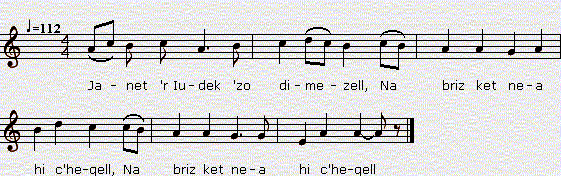

Janet ar Iudek (Eilved Stumm)
Jeannette Le Yudec (2ème version)
Chant à rapprocher de "Geneviève de Rustéfan" du "Barzhaz Breizh"
Texte recueilli par François-Marie Luzel:
Publié dans "Gwerzioù Breizh-Izel", tome 2, en 1874

Mélodie
Chantée par Maryvonne Bouillonnec, Tréguier
tirée de "Musiques Bretonnes",
recueil de Maurice Duhamel publié en 1913
Arrangement Christian Souchon (c) 2012
Source: le site de M.Quentel, "Son ha ton" (voir "Liens")
|
VERSION "GWERZIOU BREIZ IZEL" I Janet 'r Iudek 'zo dimezell, Na briz ket nea hi c'hegell, Met hi gwerzid a ve arc'hant, Hi c'hegell korn pe olifant. 'Ma Janedik war hi zreuzou, Hi oc'h ourla mouchouerou, Deuz ho ourla gant neud arc'hant, Da c'holo 'r c'haleï hi vo koant. II Janet ar Iudek a lare, 'N ti 'nn Ollier koz p'arrue : - Roët d'in skabell d'azeza, Serviedenn d'em dic'houeza, Serviedenn d'em dic'houeza ; Mar ben merc'h-kaer euz ann ti-ma. - - Merc'h kaer en ti-ma n' vefet ket, D'ar studi da Baris eo et. - P'ee Fulup Ollier d'ann urzou, Ez ee Janet dre ar parkou : - Fulup Ollier, distro, d'ar ger. Beleïenn 'walc'h 'zo en Treger ! - III Janet ar ludek a lare Euz prennestr hi c'hambr, un dez oe : - Me well 'r c'hloer iaouank 'tont d'ar ger, Ha belek Fulup Ollier ! Tric'houec'h dous kloarek am euz bet, Fulup Ollier 'nn naontekvet ; Fulup Ollier 'nn diweza, Lakaï ma c'halon da ranna ! - Fulup Ollier 'lavare D' Janet 'r Iudek, pa dremene : - Janet 'r Iudek, mar am c'haret, D'am ofern genta n' deufet ket ; 'N deufet ket d'am ofern genta, Lakad rafac'h ann-on da vanka. - - Bet drouk gant ann nep a garo, D'ho ofern genta me ielo ; D'ho ofern genta me ielo, Ha pewar fistol me brofo, Wit na laro ket ma broïz : Janet 'r Iudek 'zo diaviz. - - Mar karet Janet, n' zeufet ket, Me a roï d'ec'h pewar c'hant skoed ; Ma zad he unan ' roïo kant, Setu 'r gobr mad d'ur plac'h iaouank. - - N'eo ket d'ho aour na d'ho arc'hant, D'ec'h, Ollier, eo am euz c'hoant, Nemet o sonjal beza well Euz ho amitie, 'rok merwell. - - Euz ma amitie, tre 'vewinn, Wit a ze hallet assurin, Met nann ewit ho eureujin, Hag eo ma mamm ' zo kiriek d'in. - IV P'ee Fulup Ollier d'ann iliz, Chache Janet war he surpliz : - Fulup Ollier, distro d'ar ger, Beleïenn 'walc'h ' zo en Treger ! Pa lare 'r belek : Dominus vobiscum, Save Janet en hi zao plomm. Allas! pa ver er goureou, Kouezaz Janet war hi genaou ! 'Gichenn 'l balustro d'ann or dal, Oe klewet hi c'halon 'strakal. Ken a c'houlenne ar c'hure Ha koad ann iliz a strake ? - Janet 'r Iudek, savet ho penn, C'hui welo Jesuz 'n oferenn ; C'hui welo Jesuz selebret Tre daoudorn ho muia karet ! - Kasset oe da gambr ann dourrell, Hag eno chommas da verwell. Mamm Fulup Ollier 'lare D'hi mab belek eno neuze : - Hastet-c'hui buhan monet di, Ha 'n han' Doue konzolet hi. - Fulup Ollier a lare D'he vamm a gomze er giz-se : - Tarvet, mamm, n'em kaketet ket, C'hui n' po ket pell ur map belek ; Hirie oc'h euz ma belegi, Ha warchoas euz ma interri ! - Fulup Ollier a lare, En kambr ann dourrel p'arrue : - Demad d'ec'h, ma muia karet, C'hui ' zo o vont diwar ar bed ! - - Ma vijenn ho muia karet, N' poa ket gret d'in vel m'ho euz gret ! - Choucha he benn war hi barlenn, Merwell eno neuze zoudenn ! Doue d' bardono ann anaon, Emaint ho daou war ar varwskaon ! Setu-int et er memeuz be, Pa n'int bet er memeuz gwele : 'R re-se oa gant Doue choaset Ewit bewa vel daou bried ! Notenn gant Luzel: (0) Kanet gant Mari-Job Kado, Kerarborn, 1844. |
TRADUCTION FRANCAISE (de Luzel) I Jeanne Le Iudec est demoiselle Et ne daigne pas filer sa quenouille, A moins que son fuseau ne soit d'argent, Sa quenouille de corne ou d'ivoire. La petite Jeanne est sur le seuil de sa porte, Occupée à ourler dès mouchoirs, A les ourler avec du fil d'argent; Pour couvrir le calice ils seront charmants. II Jeanne Le Iudec disait, En arrivant chez le vieil Olivier : - Donnez-moi escabeau pour m'asseoir, Et serviette pour essuyer la sueur; (1) Serviette pour essuyer la sueur, Si je dois être belle-fille dans cette maison. - - Belle-fille dans cette maison vous ne serez, Il est allé étudier à Paris. - Quand Philippe Olivier allait recevoir les Ordres, Jeanne le suivait à travers champs : - Philippe Olivier, retourne à la maison, Assez de prêtres sont en Tréguier ! - III Jeanne Le Iudec disait, Un jour, de la fenêtre de sa chambre : - Je vois les jeunes clercs qui reviennent à la maison, (Avec eux) Philippe Olivier, fait prêtre! J'ai eu dix-huit amoureux clercs, Philippe Olivier est le dix-neuvième; Philippe Olivier, le dernier, Me brisera le coeur ! - Philippe Olivier disait A Jeanne Le Iudec, en passant : - Jeanne Le Iudec, si vous m'aimez, Vous ne viendrez pas à ma première messe; Vous ne viendrez pas à ma première messe, Car vous me feriez faillir. - - Le trouve mauvais qui voudra, J'irai à votre première messe; J'irai à votre première messe, Et je ferai offrande de quatre pistoles, Afin que mes compatriotes ne disent pas : Jeanne Le Iudec est malavisée. - - Si vous voulez, Jeanne, ne pas venir, Je vous donnerai quatre cents écus; Mon père lui-même vous en donnera cent, Un bon gage pour une jeune fille ! - - Ce n'est ni votre or ni votre argent, Mais c'est vous-même, Olivier, que je désire, Dans l'espoir de me trouver mieux De votre amitié, avant de mourir. - De mon amitié, aussi longtemps que je vivrai, Je puis vous donner l'assurance, Mais non de vous épouser, Et c'est ma mère qui en est la cause. - IV Quand Philippe Olivier allait à l'église, Jeanne le tirait par son surplis: - Philippe Olivier, retourne à la maison, Assez de prêtres sont en Tréguier ! - Quand le prêtre disait : Dominus vobiscum! Jeanne se levait tout droit debout. Hélas! quand on fut à l'élévation, Jeanne tomba sur la bouche ! Depuis les balustres (le choeur) jusqu'à la porte principale, On entendit son coeur éclater, Si bien que le vicaire demandait Si c'était la charpente de l'église qui craquait ? - Jeanne Le Iudec, levez la tête, Vous verrez Jésus dans la messe; Vous verrez Jésus glorifié Entre les mains de votre bien-aimé ! - On la porta dans la chambre de la tour, Et elle resta là mourir. La mère de Philippe Olivier disait A son fils prêtre, en ce moment : Pressez-vous d'y aller, Et au nom de Dieu, consolez-la. - Philippe Olivier disait A sa mère, en l'entendant parler de la sorte : - Taisez-vous, ma mère, ne me plaisantez pas, Vous n'aurez pas longtemps un fils prêtre; Vous célébrez aujourd'hui mon ordination, Et demain vous serez à m'enterrer ! - Philippe Olivier disait, En arrivant dans la chambre de la tour : - Bonjour à vous, ma plus aimée, Vous allez sortir de ce monde ! - - Si j'étais votre plus aimée, Vous ne m'auriez pas traitée comme vous l'avez fait ! Il appuya sa tête sur ses genoux, Et mourut là, presqu'aussitôt ! Que Dieu pardonne à leurs âmes, Ils sont tous les deux sur les tréteaux funèbres! Ils sont allés dans le même tombeau, Puisqu'ils n'ont pas été dans un même lit : Ceux-là étaient choisis par Dieu Pour vivre (ensemble) comme deux époux ! Note de Luzel: (0) Chanté par Marie-Josèphe Kerival à Keramborgne en 1848. (1) On aura déjà remarqué plusieurs fois cette formule, et on la remarquera encore plus d'une fois dans la suite. C'est là un lieu commun dont nos chanteurs populaires font souvent usage. |
ENGLISH TRANSLATION I Jenny Yudek is a young lady, Who would not vouchsafe to spin yarn, Unless her spindle be of silver, Her distaff of horn or ivory! Now Jenny sits on her threshold. Seaming handkerchiefs, Seaming them with silver thread: To cover a chalice they will be fine. II Jenny Yudek said On entering Old Oliver's house: - Give me a stool a to sit down And a towel to wipe off my sweat! And a towel to wipe off my sweat If I am to be daughter-in-law in this house. Daughter-in-law in this house you shan't be: [My son]'s gone to Paris to study. When Philip Oliver went to be ordained Jenny followed him over meads and fields. - Philip Oliver, return back home! In Tréguier they have enough priests! - III Jenny Yudek, she said One day, sitting at her window: - I see the young clerks coming home, With them is Philip Oliver [the new] priest. Eighteen lovers I had, all of them were clerks, Philip Oliver was the nineteenth And shall be the last one. And he shall cause my heart to break! - Philip Oliver said To Jenny Yudek, as he passed by: - Jenny Yudek, if you love me You won't come and hear my first mass. You won't come and hear my first mass, Or, for sure, my heart will fail me. - Find it improper whoever will, I'll attend your first mass. I'll attend your first mass I'll give five pistoles to the collection, Lest my fellow citizens would say, Jenny Yudek is not level-headed. If you choose, Jenny, not to come, I shall give you four hundred crowns My father will give you another hundred: Quite a dowry for a girl! - - Neither your gold nor your silver! Oliver, it's only you whom I want, I expect relief From your friendship, before I die. - Of my friendship , as long I live, I may assure you. But not of my marrying you And it is my mother who is to be blamed. - IV When Philip Oliver went to church Jenny grasped him by his surplice: - Philip Oliver, go home! There are enough priests in Tréguier! When the priest said "Dominus vobiscum!" Jenny rose to her feet. But when it came to the Elevation of the host Jenny collapsed with her face on the floor! From the altar balustrade down to the church door Her heart was heard cracking, So that the vicar asked: - Was it the framework of the church? - - Jenny Yudek, raise your head! You shall see Jesus in the host. You shall see Jesus in glory Held up in your lover's hands. She was carried to her chamber in the tower And there sha was left, dying. Philip Oliver's mother said To her son, now a priest: - Go up to her room! Hurry up! And in God's name, cheer her up! - Philip Oliver said to his mother Who spoke so carelessly: Be silent, mother! Enough of that joke! You won't have had for long a priest for a son Today was my ordination; Tomorrow will be my funeral! - Philip Oliver said On entering the chamber in the tower: - Accept my greeting, my dearest, Who now depart from here below! - Would you, had I been your dearest, Have treated me the way you did? Upon her lap his head he leant. Now his life had come to an end. O God, grant pardon to the dead! Upon the trestles they were laid. And they were laid in the same grave Their wedding bed here below. Their souls went up to heaven To be united by God. Note by Luzel: (0) Sung by Marie-Josèphe Kerival à Keramborgne en 1848. (1) This turn of phrase is not rare and will be often encountered. The singers were fond of this cliché. |